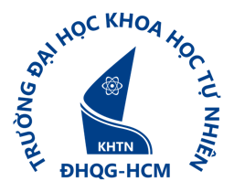

Hello, I’m Bac — a Database Administrator at SACOMBANK with an interest in building reliable data platforms.
- Working with Oracle database infrastructure and data integration.
- Interested in data platforms, data lakehouses, distributed systems and LLMs.
- Data Science specialization at University of Science, VNU-HCM.
Highlights
SIMIODE Challenge Using Differential Equations in Modeling. Watch presentation ↗
Education

B.Sc. Mathematics & Computer Science
2022 – 2026University of Science, VNU-HCM
Data Science specialization · GPA 3.42 / 4.0
Technical Skills
Databases & Integration — Oracle 19c, RAC, ASM, RMAN, GoldenGate, ODI, PostgreSQL, SQL Server, MySQL
Data Engineering — Spark, Kafka, Debezium, dbt, Dagster, Airflow, MinIO / S3, ClickHouse
Code & Infrastructure — Python, SQL, Linux, Docker, Git, FastAPI, Streamlit, OHS / WebLogic
Experience

Database Administrator
Mar 2026 – PresentSACOMBANK · Ho Chi Minh City
- Administered and troubleshot Oracle GoldenGate CDC pipelines, replicating billions of records from banking systems (T24, IBFT, CARD) to ODS/DWH.
- Migrated Oracle GoldenGate Classic to Microservices Architecture, supporting SQL Server–Oracle, Oracle–Oracle, and Db2–Oracle replication.
- Deployed Oracle REST Data Services (ORDS) to replace legacy DBLinks with secure REST APIs, supporting the Sacombank Pay-to-SacomPay migration (5M+ users).
- Deployed and administered clustered Oracle Data Integrator (ODI) JEE agents on WebLogic Server, supporting enterprise ETL workflows.
- Implemented Oracle HTTP Server (OHS) as a reverse proxy for 5 enterprise platforms (ODI, OAS, OFSAA, ORDS, OGG), including SSL/TLS certificates and domain configuration.
- Performed Oracle RAC patching across dual-site (DC/DR) environments and assisted with Exadata (X7, X9M) patching.
- Optimized Oracle SQL performance through execution plan analysis, indexing, partitioning, and optimizer statistics management.
Technologies: Oracle 19c (RAC / ASM) · OGG · ODI · OHS · OAS · ORDS · Linux · Network
Database Administrator Intern
Jan – Mar 2026SACOMBANK · Potential Intern Program 2026
Projects
Research
VietGreen: A Sustainability Data Platform for Vietnam
Research project · In developmentExploring how to organize environmental metrics, product sustainability information, and source evidence in a structured data platform.
Awards & Certificates
- SCUDEM XI 2026 — Meritorious Award · Presentation ↗
- Spring School on Statistics and Machine Learning ·
- AIESEC Training & Business Case Program ·
- Vietnam Datathon 2023 — Top 24 / 160 Teams ·